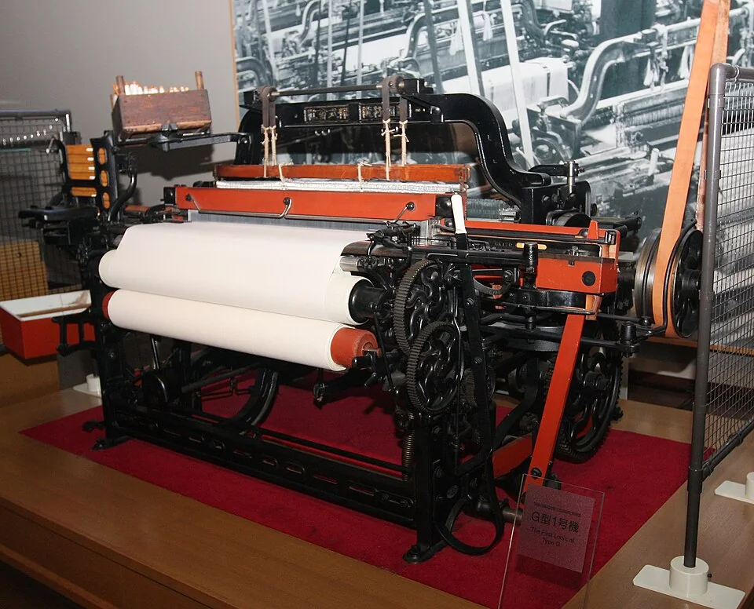

The people who built Toyota
Jump to Toyota’s current leaders ↓
When Kiichiro Toyoda went looking for land to build a car factory, the town of Koromo had a reason to welcome him. Its silk industry had suffered during the Great Depression. Mayor Juichi Nakamura wanted work for the town. For Kiichiro, the nearby Mikawa Railway could bring materials to the plant. The factory they helped bring to Koromo is now Toyota’s Honsha Plant, in the city you’ll visit on November 25. Read the Honsha Plant story in Toyota Times.
TL;DR Koromo needed jobs, and its railway could bring materials to Kiichiro’s new car factory.

Sakichi Toyoda and the broken thread
Kiichiro’s father, Sakichi Toyoda, built looms. In 1896 he developed a power loom that stopped when the thread running across the cloth broke. That mattered to the weaver. A machine that kept going could weave the same flaw into more cloth before anyone noticed. A loom that stopped gave someone a chance to fix the break. Toyota traces jidoka, its practice of stopping work when something goes wrong, back to this invention. Toyota’s account of jidoka.
Father and son later worked together on a different interruption. A loom’s shuttle carries thread back and forth, and changing it usually meant stopping the machine. In 1924 their team completed the Type G automatic loom, which could change shuttles while it ran. Toyota Industries’ biography of Sakichi.
TL;DR Toyota traces jidoka to Sakichi’s loom, which stopped when a thread broke so the weaver could fix it.
Kiichiro takes the loom business into cars
After the Great Kanto Earthquake of 1923 damaged the railways, imported trucks were converted into buses. Kiichiro saw what motor vehicles could do when people needed to move again. In 1933 he set up an automotive department inside Toyoda Automatic Loom Works. Between loom jobs, the team took American vehicles apart to learn how they were made. Kiichiro’s path to Koromo.
The department became a separate company on August 28, 1937. At registration, Risaburo Toyoda was president and Kiichiro was executive vice president. The company marked the completion of its Koromo plant on November 3, 1938. The founding record and first management team.
TL;DR Kiichiro started the car division in 1933, and Risaburo became the new car company’s first president in 1937.
Who asks for the next part?
At Koromo, Kiichiro wanted each workshop to make the number of parts the next one could use that day. A surplus of one component did little good if a different one was missing. He called the idea Just-in-Time. Wartime rationing made the timing difficult, and it took years for the factories to put his idea into regular practice. How Just-in-Time began.
After the war, Eiji Toyoda backed Taiichi Ohno as Ohno developed the production system on the factory floor. In 1954 Toyota began using what it called the “supermarket method.” Think of the assembly crew as the shopper. It takes the parts it needs from the machine shop. The machine shop then knows what to replace. A card called a kanban carried the part name, number and quantity so the next order could follow actual use. Eiji and Ohno’s roles · The factory’s supermarket method.
TL;DR For Just-in-Time production, a kanban card tells the machine shop which parts to replace and how many.
The name on the head office
On July 1, 1982, Eiji and Shoichiro Toyoda pulled a cord at the head office to unveil a granite nameplate. It read Toyota Motor Corporation (TMC). Toyota’s manufacturing and sales companies had reunited that day. Eiji became chairman and Shoichiro became president. The merger and nameplate ceremony.
There’s a Philippine chapter, too. George S.K. Ty was the founding chairman of Toyota Motor Philippines Corporation (TMP), incorporated in 1988. Its first manufacturing operations were in Bicutan. In its 2026 anniversary account, TMP says its Santa Rosa plant builds the Vios, Innova and Tamaraw. Toyota Motor Philippines’ anniversary account.
TL;DR Toyota’s manufacturing and sales companies merged in 1982, six years before Toyota Motor Philippines was incorporated.
At Toyota Kaikan
During your November 25 visit, look for Production and Creation. The museum uses welding robots to explain how Toyota builds vehicles. Sakichi’s loom suggests a question to ask your host. When someone spots a bad weld, how does the team signal the problem and decide when to restart? Kaikan exhibit guide · Your Toyota City itinerary.
TL;DR At the welding exhibit, ask your host who can stop the line and who decides when it can restart.
Who leads Toyota today?
Grouped by title as of . Toyota’s executive directory · Board appointments and officer roles.
-
Chair and vice chair
- Akio ToyodaChairman of the Board
- Koji SatoVice Chairman and Chief Industry Officer
-
President and executive VPs
- Kenta KonPresident and Chief Executive Officer
- Hiroki NakajimaExecutive Vice President and Chief Technology Officer
- Yoichi MiyazakiExecutive Vice President and Chief Financial Officer
TL;DR Akio Toyoda chairs the board, and Kenta Kon runs the company as CEO.